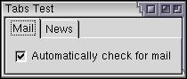
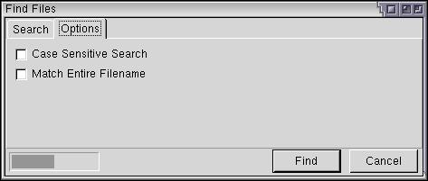

Tabboxes
It is common in preference dialogs for tabbed pages to appear. We'll find out how to create them here.
Tabboxes
Tabboxes are typically used in an application in the preferences window. A series of tabs appears across the top of a window. The user can click each tab to see a different set of options. It is useful in cases when you have more options than will fit in one screen.
XUL provides a method to create such dialogs. It involves five new elements, which are described briefly here and in more detail below.
- tabboxThe outer box that contains the tabs along the top and the tab pages themselves.
- tabsThe inner box that contains the individual tabs. In other words, this is the row of tabs.
- tabA specific tab. Clicking on the tab brings the tab page to the front.
- tabpanelsThe container for the pages.
- tabpanelThe body of a single page. You would place the content for a page within this element. The first tabpanel corresponds to the first tab, the second tabpanel corresponds to the second tab and so on.
The tabbox is the outer element. It consists of two children, a tabs element which contains the row of tabs and a tabpanels elements which contains the tabbed pages.
Shown below is the general syntax of a tabbox:
<tabbox id="tablist">
<tabs>
-- tab elements go here --
</tabs>
<tabpanels>
-- tabpanel elements go here --
</tabpanels>
</tabbox>The tab elements are placed inside a tabs element which is much like a regular box. The tabs element itself has been placed inside a tabbox. The tabbox also contains a tabpanels element which will appear below the tabs due to the vertical orientation on the whole tabbox.
There is really nothing special about the tab elements that make them different than boxes. The difference is that the tabs render slightly differently and only one tab panel's contents are visible at once, much like a deck.
The content of the individual tab pages should go inside each tabpanel element. It does not go in the tab element as that is where the contents of the tab along the top go (which could contain any elements itself).
Each tabpanel element becomes a page on the tabbed display. The first panel corresponds to the first tab, the second element inside the panel corresponds to the second element, and so on. There is a one-to-one relationship between each tab element and the tabpanel elements.
When determining the size of the tabbox, the size of the largest page is used. That means that if there are ten textboxes on one tab page and only one on another, the tab page will be sized to fit the one with the ten on it as this takes up more room. The area taken up by the tab area does not change when the user switches to a new tab page.
Let's look at an example:
Example 4.3.1: Source View<tabbox>
<tabs>
<tab label="Mail"/>
<tab label="News"/>
</tabs>
<tabpanels>
<tabpanel id="mailtab">
<checkbox label="Automatically check for mail"/>
</tabpanel>
<tabpanel id="newstab">
<button label="Clear News Buffer"/>
</tabpanel>
</tabpanels>
</tabbox> Here, two tabs have been added. The first one labeled Mail and the other labeled News. When the user clicks the Mail tab, the contents of the first tab page will be displayed. In this case, the box with the check box labeled 'Automatically check for mail' will appear in the first tab. The second tab, when clicked, will display the box containing the button labeled Clear News Buffer. In the code, the two tab pages have been labeled 'Mail' and 'News'.
The currently selected tab element is given an additional selected attribute on a tab element which is set to true. This is used to give the currently selected tab a different appearance so that it will look selected. Only one tab will have a true value for this attribute at a time.
Finally, you can change the position of the tabs so that they appear on any side of the tab pages. There is no special syntax to do this. You simply rearrange the position of the tabs and set the orient attribute as necessary. Remember that the tab elements are much like regular boxes in terms of layout. However, you should probably leave the tabs on top, otherwise they might not look very good under particular themes.
For example, to put the tabs along the left side, change the orientation of the tabs so that it is vertical. This is because you want the tabs to appear vertically stacked. Also, adjust the tabbox so it has horizontal orientation. This needs to be done because you want the tabs to appear beside the tab pages.
You can place the tabs on the right or bottom side by moving the tabs so that it is after the tabpanels.
Adding Tabs to the Find Files Dialog
Let's add a second panel to the find files dialog. We'll create an Options tab that will contain some options for searching. This may not be the best interface for doing this, but we'll use it to demonstrate tabs. The label across the top and the search criteria box will need to go on the first tab. We'll add some options on the second tab. The progress bar and the buttons can stay on the main dialog, outside of the tabs.
<vbox flex="1"> <tabbox> <tabs> <tab label="Search" selected="true"/> <tab label="Options"/> </tabs> <tabpanels> <tabpanel id="searchpanel" orient="vertical"> <description> Enter your search criteria below and select the Find button to begin the search. </description> <spacer style="height: 10px"/> <groupbox orient="horizontal"> <caption label="Search Criteria"/> <menulist id="searchtype"> <menupopup> <menuitem label="Name"/> <menuitem label="Size"/> <menuitem label="Date Modified"/> </menupopup> </menulist> <spacer style="width: 10px;"/> <menulist id="searchmode"> <menupopup> <menuitem label="Is"/> <menuitem label="Is Not"/> </menupopup> </menulist> <spacer style="height: 10px"/> <textbox id="find-text" flex="1" style="min-width: 15em;"/> </groupbox> </tabpanel> <tabpanel id="optionspanel" orient="vertical"> <checkbox id="casecheck" label="Case Sensitive Search"/> <checkbox id="wordscheck" label="Match Entire Filename"/> </tabpanel> </tabpanels> </tabbox>

The tab elements have been placed around the main content of the window. You can see the two tabs, Search and Options. Clicking on each one will bring up the respective tab pages. As shown by the image, the two options appear on the second tab. The first tab looks pretty much like it did before, apart from the tabs along the top.
(Next) Next, we'll look at how to create grids of content.
Examples: 4.3.1